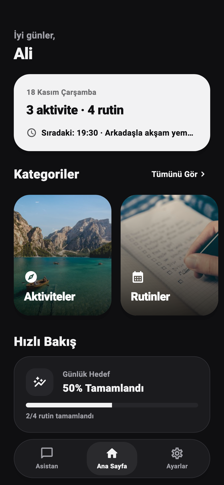

Kişisel yapay zeka asistanı
Smart
Assistant
Spor, finans, rutinler, aktiviteler ve notların tek uygulamada. Yapay zeka hepsini bilir, sorduğunu cevaplar, istediğini ekler.
5 modülYapay zeka sohbetiAçık ve koyu tema
Spor, finans, rutinler, aktiviteler ve notların tek uygulamada. Yapay zeka hepsini bilir, sorduğunu cevaplar, istediğini ekler.


